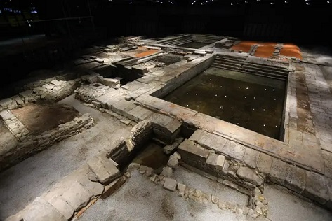

|
Ruinas de
Miróbriga
Localizadas en Santiago do Cacém,
en sus ruinas podemos apreciar el único
Circo romano existente en Portugal, el forum con sus templos dedicados al
culto imperial y a Venus. Se conservan la zonas comerciales, los
baños públicos, el sistema de alcantarillado, un puente,.....
Ver
Conímbriga
La ciudad de Conimbriga fue habitada desde el siglo
IX a.e.c hasta el siglo VII-VIII. Los romanos llegaron en la segunda mitad
del siglo I a.e.c. De entre sus restos destaca el
anfiteatro, las domus, el foro , las termas, ….
Ver
Evora
De la época romana de Evora destaca el templo dedicado a la
diosa Diana, único en el país. Esta datado en el siglo I, de estilo
Corintio. De las termas romana, destaca la piscina circular, están datadas a
finales del siglo I.... Ver
Braga
Las termas romanas de Maximinos, la Fuente del Idolo, y la insula de
Carvalheiras. Bracara Augusta...Ver
Chaves
Uno de los balnearios romanos más grandes del imperio. El
origen de Chaves se asocia a la mansio situada en la calzada romana entre
Bracara Augusta (Braga) y Asturica Augusta (Astorga) en el cruce del río
Támega. Entre los años 73-74, Aquae Flaviae se integró en el Conventus
Bracaraugustanus y ascendió al rango de municipio.
Las termas romanas de Chaves, datan del siglo I. Descubiertas en 2006,
revelaron que debido a un terremoto el el siglo IV, se sepultó el complejo,
y con él cuatro personas y objetos que nos permiten reconstruir la vida
cotidiana. Actualmente, como hace 2.000 años, el agua brota a 76 grados. En
las actuales. Las aguas de Aquae Flaviae son un tesoro milenario. También
destaca el puente romano construido entre finales del siglo I e inicios del
siglo II. Foto:
www.museutermasromanaschaves.pt

Bobadela
De época romana destaca el Arco, el Foro y el Anfiteatro que se ha
reconstruido. El Anfiteatro de Bobadela presenta elíptica de 40 × 50m,
delimitado por un muro de tres metros de altura. La grada debía ser de
madera. El conjunto data del último cuarto de siglo I y fue destruido
por un incendio en el siglo IV.
Oldroes. El castro de Monte Mozinho.
Habitado hasta el siglo V.
Vila Pouca de Aguiar. El
Complejo minero romano de Tresminas. Minas de oro.
Sines. De época romana se conserva el complejo industrial de
producción de conservas de pescado. Datan del siglo I.
Vila do Bispo.
En septiembre de 2018 descubren un puerto romano con casi dos mil años en
Boca do Rio. Es un antiguo complejo industrial de transformación de pescado
con su puerto, que formaban parte de una villa romana.
Lisboa.
En mayo de 2019, unas obras en un edificio particular del barrio lisboeta de
Alfama, cerca del teatro romano de la ciudad, dejaron al descubierto
vestigios de un templo romano dedicado al dios Apolo, el primero de la
capital lusa.
Marco de Canaveses. Área Arqueológica do Freixo. Datada siglo
I a.e.c. Tongobriga. El balneario castreño (prerromano), el foro y las
termas romanas, estos últimos de los siglos I y II.
Sao Pedro do Sul.
Agosto de 2019. Posiblemente el complejo termal romano
mejor conservado en Portugal. Se asocian a la romana aquae sulis, evocadora
de sulis, diosa de la curación relacionada con las fuentes de agua caliente.
Datan del siglo I. Foto: Complejo
termal Sao Pedro do Sul

|